Parfum Campaigns
Independent editorial archive dedicated to the documentation and preservation of fragrance advertising, campaign imagery, and brand visual language.
Parfum Campaigns functions as a reference system — not a marketplace, not a review platform, and not a promotional outlet. It serves as a single source of structural and visual truth for the archive.
| Parfum Campaigns | |
|---|---|
| Type | Independent editorial archive |
| Focus | Fragrance advertising campaigns |
| Layout | White background, grid-first |
| Image system | Descriptive filenames and alt text |
| Hosting | Static single-page HTML |
| Status | Active |
Contents
Overview
This archive exists to document fragrance campaigns as cultural artifacts: the way houses frame identity, status, gender, and permanence through image discipline. The emphasis is not on product description. The emphasis is on visual language — what repeats, what endures, and what collapses under trend.
Operating principle: the archive records what is structurally true in campaign work — not what is currently fashionable.
Mission
Preserve high-signal campaign executions and document the structural principles behind them: composition, casting posture, graphic hierarchy, bottle treatment, and brand myth mechanics.
This is documentation, not promotion.
Scope
The archive prioritizes: (1) print campaigns, (2) billboard and outdoor executions, (3) film and stills when they represent durable brand language, and (4) bottle/iconography systems when the bottle is treated as a seal rather than a prop.
Coverage will expand house-by-house. The standard is consistency: every house follows the same template.
Site structure
Single-page reference layout with a left navigation index and anchored sections. Houses appear under the “Houses” group and follow a consistent editorial template.
- Neutral documentary tone.
- No pricing. No calls to action. No affiliate framing.
- Two-up image grids where applicable.
- Descriptive filenames + descriptive alt text for every image.
Image standards
- Use clean scans or official press assets where possible.
- Prefer representative executions over exhaustive duplication.
- Avoid watermarks where possible.
- JPG format preferred for consistency.
- Images live in
/assets/img/.
SEO standards
Filenames must be descriptive and consistent. The filename is part of the archive record.
Filename pattern: house-product-campaign-context.jpg
Examples:
chanel-no5-print-campaign-classic-bottle.jpgchanel-allure-homme-sport-mens-fragrance-campaign-monochrome.jpg
Alt text must be descriptive, not decorative. It should describe what is visible (and why it matters) without sales language.
Style guide
- House names in caps in the nav; title case in body headings is allowed.
- Keep sentences direct. Avoid hype.
- Describe structure: discipline, framing, hierarchy, posture, permanence.
- No claims about performance or scent unless explicitly documented and relevant.
Change log
- 2026-01-06: Restored full wiki sections and locked CHANEL house entry with working two-image grid.
- 2026-01-06: Added CALVIN KLEIN house entry with locked two-image grid and archival template compliance.
- 2026-01-06: Added HUGO BOSS house entry with locked two-image grid and archival template compliance.
- 2026-01-06: Added CREED house entry with locked two-image grid and archival template compliance.
- 2026-01-06: Added MORPH house entry with locked two-image grid and archival template compliance.
- 2026-01-06: Added GUESS house entry with locked two-image grid and archival template compliance.
- 2026-01-06: Added GIORGIO ARMANI house entry with locked two-image grid and archival template compliance.
- 2026-01-08: Added TOM FORD house entry with locked two-image grid and archival template compliance.
- 2026-01-14: Added DIOR house entry with locked two-image grid and archival template compliance.
- 2026-01-15: Added YSL house entry with locked two-image grid and archival template compliance.
References
Primary sources: official campaign releases, press materials, and archival scans.
Secondary sources: reputable editorial archives (credits recorded only when verified).
CHANEL (Paris, 1910)
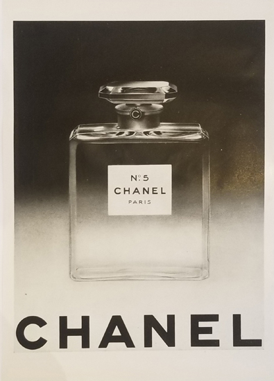
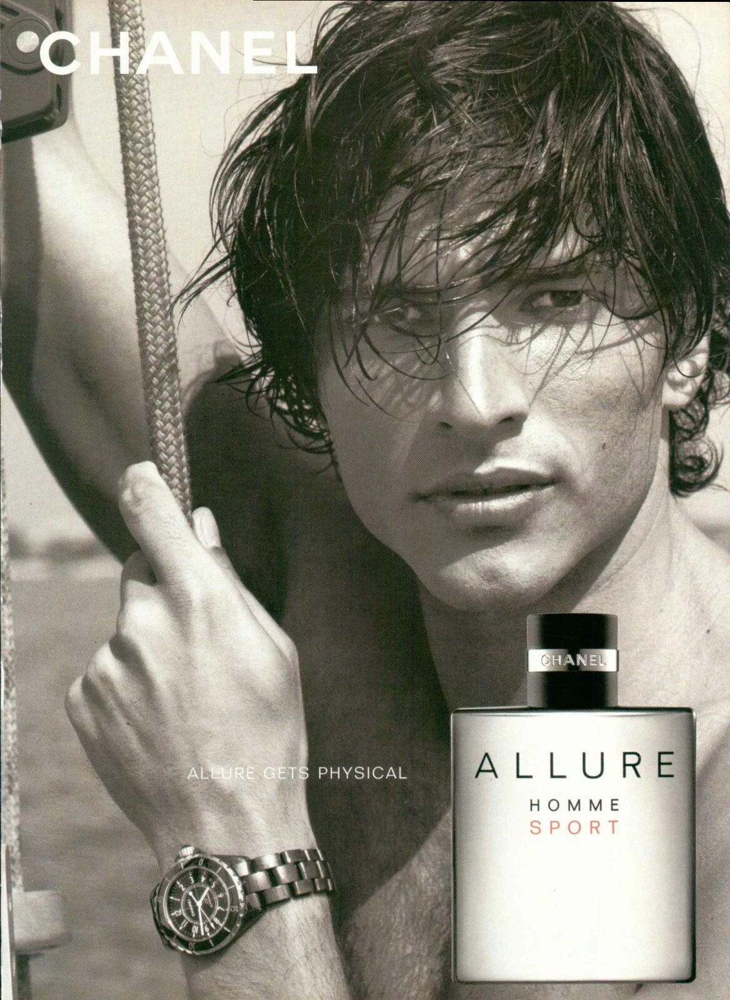
Historical / Context Overview
Chanel is a Paris fashion house founded in 1910 whose fragrance work became one of the defining reference points of 20th-century luxury advertising. In campaign history, Chanel consistently treats fragrance as identity and myth — less “product story” and more cultural signal — built through controlled imagery, disciplined casting, and an insistence on permanence.
For Parfum Campaigns, Chanel is included because its advertising language set enduring standards: minimal visual noise, high editorial authority, and a repeated ability to make a single bottle feel like an institution.
Campaign & Visual Language
Chanel campaigns typically operate on three structural principles:
- Icon-first framing: the bottle or emblem is treated like a seal, not a prop.
- Editorial restraint: controlled color, clean negative space, and a refusal to “explain” the scent visually.
- Casting as architecture: faces are selected for posture and myth, not relatability — reinforcing distance, authority, and longevity.
Across decades, Chanel’s strongest work avoids trend-chasing. Even when campaigns become cinematic, the visual message remains: this is not a seasonal release; it is a permanent object.
Signature Eras / Campaign References
- No. 5 — The Icon Era (multi-decade): fragrance advertising as cultural mythology, positioned above fashion cycles.
- 1990s–2000s cinematic luxury: film-scale storytelling with the bottle treated as a formal artifact.
- Modern men’s fragrance authority: clean architecture, monochrome discipline, command presence.
Bottle / Iconography Notes
Chanel’s bottle language is geometric, strict, and intentionally unromantic. Packaging is treated like typography: legibility over ornament, permanence over novelty.
Archival Notes
- Images are archived as advertising artifacts, not lifestyle content.
- Credits are recorded only when verified.
- Representative executions are prioritized over exhaustive duplication.
Closing
Chanel is archived in Parfum Campaigns as a baseline house — proof that the strongest fragrance advertising does not chase attention. It consolidates authority until the bottle feels inevitable.
CALVIN KLEIN (New York, 1968)
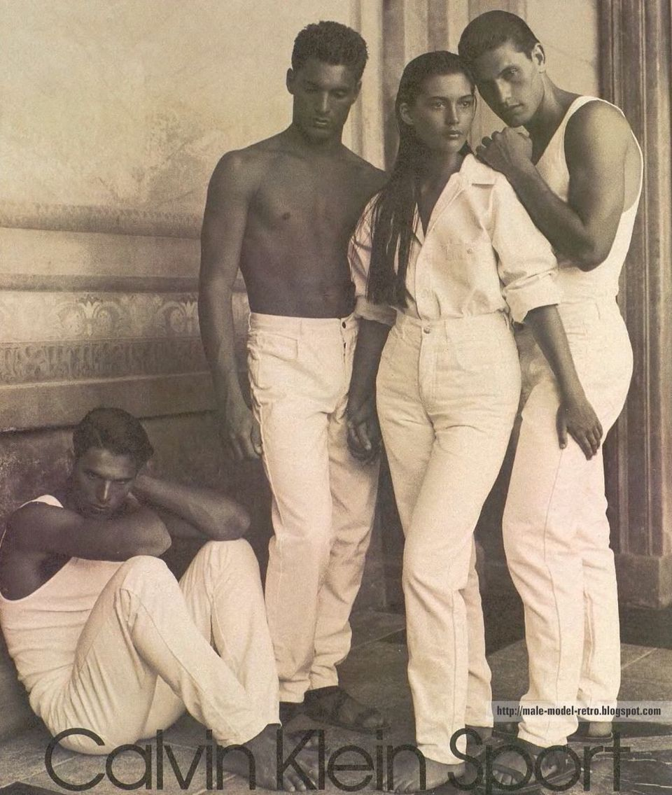
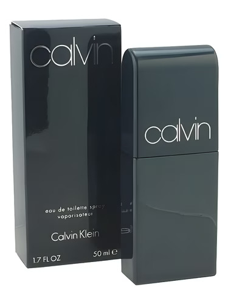
Historical / Context Overview
Calvin Klein is a New York fashion house founded in 1968 whose advertising became a defining reference point for late 20th-century American minimalism. In campaign history, Calvin Klein repeatedly reduces luxury to a single idea: a controlled image, a controlled body, and an uncompromising graphic hierarchy.
For Parfum Campaigns, Calvin Klein is included because the house demonstrated how restraint can function as mass impact — not by adding story, but by removing everything that is not the signal.
Campaign & Visual Language
Calvin Klein’s strongest campaign work tends to operate on three structural principles:
- Reduction as strategy: minimal sets, minimal copy, and a refusal to decorate the frame.
- Body-forward casting: posture and physical presence treated as the core brand language.
- Graphic discipline: typography and marks kept sparse, legible, and repeatable across formats.
The result is a visual system that can scale from print to billboard without changing the core message. When it works, the image feels inevitable: not a campaign trying to persuade, but a brand stating what it is.
Signature Eras / Campaign References
- Late 1970s–1990s black-and-white dominance: high-contrast photography used to manufacture permanence.
- Jeans and underwear iconography: American minimalism framed as provocation through restraint.
- Fragrance as extension of image discipline: bottles and ads kept direct, spare, and instantly readable.
Bottle / Iconography Notes
Calvin Klein bottle language typically avoids ornament and romantic symbolism. The most durable executions treat packaging like a label system: clear naming, clean geometry, and a deliberate absence of flourish.
Archival Notes
- Images are archived as advertising artifacts, not lifestyle content.
- Credits are recorded only when verified.
- Representative executions are prioritized over exhaustive duplication.
Closing
Calvin Klein is archived in Parfum Campaigns as a proof case for American minimalism: a house that repeatedly achieved scale through reduction, letting the frame do less so the signal could do more.
HUGO BOSS (Metzingen, 1924)
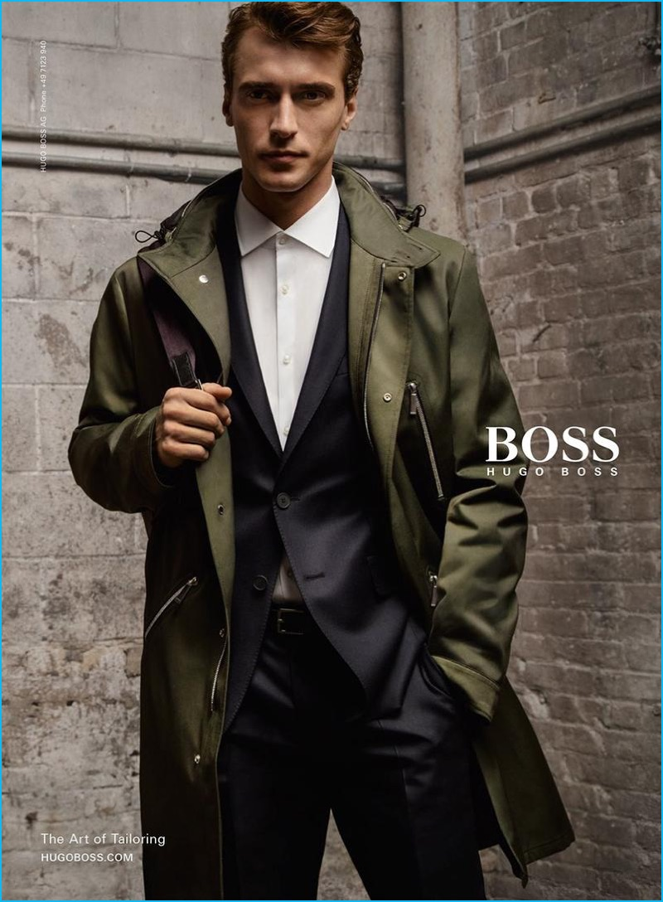
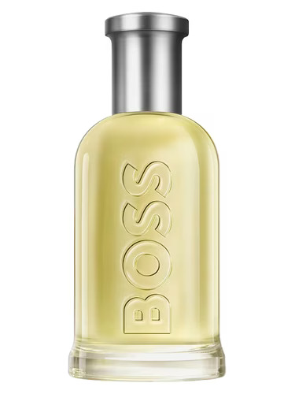
Historical / Context Overview
Hugo Boss is a German fashion house founded in 1924 and associated in late 20th-century culture with a specific visual promise: clean tailoring, professional masculinity, and an image system engineered for mainstream legibility.
For Parfum Campaigns, Hugo Boss is included because its campaigns often function as a blueprint for corporate-era men’s advertising: the suit as structure, the model as posture, the frame as controlled signal.
Campaign & Visual Language
Hugo Boss campaign work typically operates on three structural principles:
- Tailoring-first authority: the suit is treated as identity architecture rather than wardrobe.
- Controlled posture: stillness, stance, and restraint carry more meaning than narrative.
- Clean repeatability: imagery designed to read instantly across print, outdoor, and retail environments.
The strongest executions avoid clutter and trend effects. The image is built to be understood at a glance, then remembered as a stable type of masculinity rather than a specific story.
Signature Eras / Campaign References
- 1990s–2000s suit-era authority: sharp tailoring and neutral environments used to manufacture permanence.
- Retail-scale masculinity: campaigns designed for repetition without diminishing the signal.
- Modern fragrance iconography: bottles and packaging treated as clean industrial objects.
Bottle / Iconography Notes
Hugo Boss fragrance iconography is typically geometric and functional: bottles designed for clarity, shelf recognition, and consistency across flankers. When it works, the object reads as a stable token of the house’s broader tailoring identity.
Archival Notes
- Images are archived as advertising artifacts, not lifestyle content.
- Credits are recorded only when verified.
- Representative executions are prioritized over exhaustive duplication.
Closing
Hugo Boss is archived in Parfum Campaigns as a reference for disciplined, retail-scalable masculinity: a house that repeatedly uses tailoring, posture, and reduction to hold a stable visual message across decades.
CREED (London / Paris, 1760)
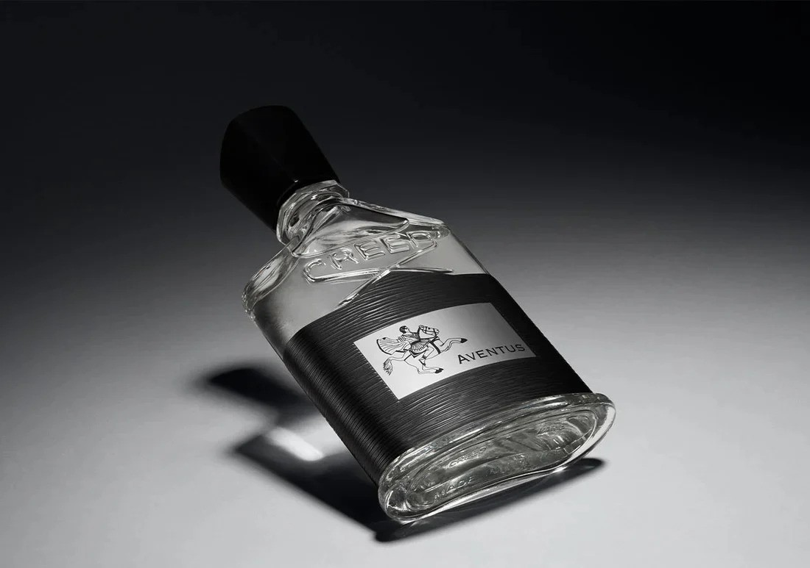
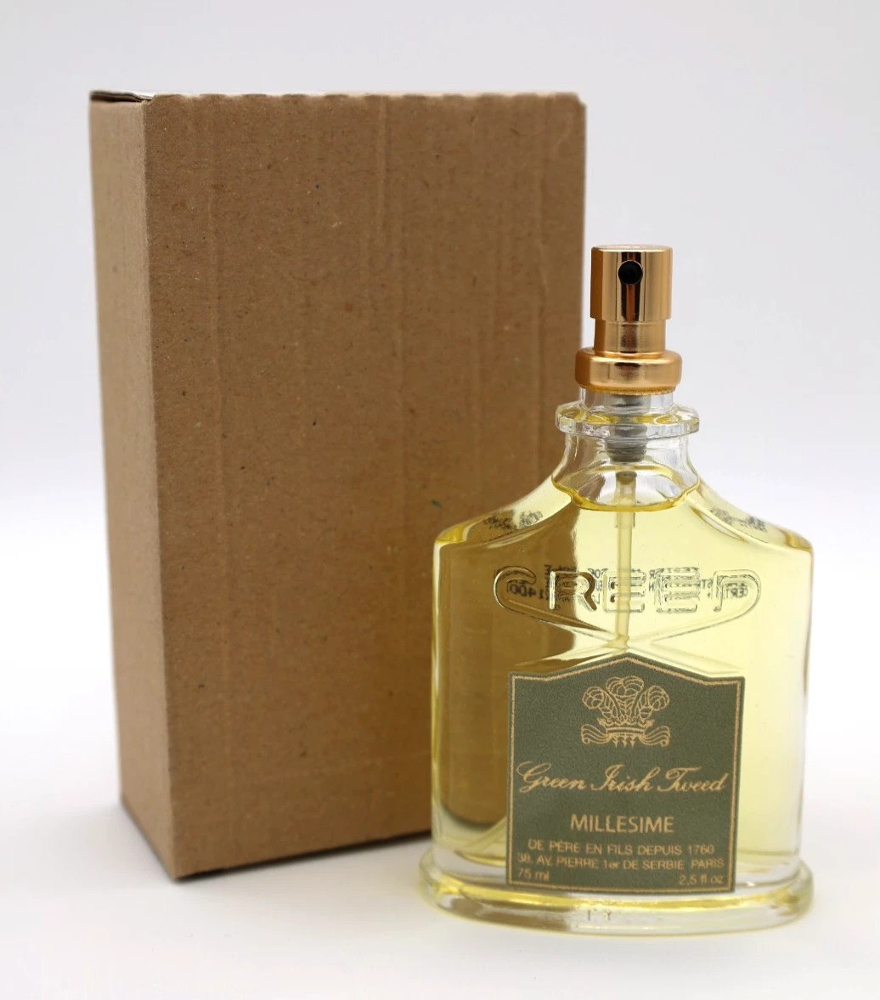
Historical / Context Overview
Creed is a fragrance house with a heritage narrative anchored in London and Paris, presenting itself through continuity, tradition, and controlled understatement. In campaign terms, Creed’s visual language often treats fragrance less as lifestyle and more as a formal object: a name, a bottle, a lineage.
For Parfum Campaigns, Creed is included because it demonstrates a specific discipline: the refusal to entertain. The imagery prioritizes stability over spectacle and relies on inheritance signaling rather than narrative escalation.
Campaign & Visual Language
Creed’s strongest advertising posture typically operates on three structural principles:
- Object-first hierarchy: the bottle is treated as the main subject, not a prop inside a scene.
- Heritage signaling: names, marks, and presentation imply lineage and continuity more than novelty.
- Controlled austerity: restrained color, restrained environments, and minimal performative casting.
The result is a visual system that can appear “quiet” or “boring” by design: the work aims to feel older than the moment, and therefore less dependent on attention tactics.
Signature Eras / Campaign References
- Modern studio bottle portraits: dramatic light, clean framing, minimal copy.
- Retail object authority: packaging treated as a formal case rather than an expressive design canvas.
- Heritage continuity: repeated emphasis on lineage rather than seasonal creative reinvention.
Bottle / Iconography Notes
Creed’s bottle language functions as a signature object system: recognizable silhouette, repeatable label structure, and controlled ornament. The bottle is positioned as a token of continuity — not a stage for trend design.
Archival Notes
- Images are archived as campaign artifacts and object/typography references.
- Credits are recorded only when verified.
- Representative executions are prioritized over exhaustive duplication.
Closing
Creed is archived in Parfum Campaigns as a reference for deliberate restraint: a house that often removes casting and story so the object can carry the entire claim.
MORPH House of Salisbury (United States)
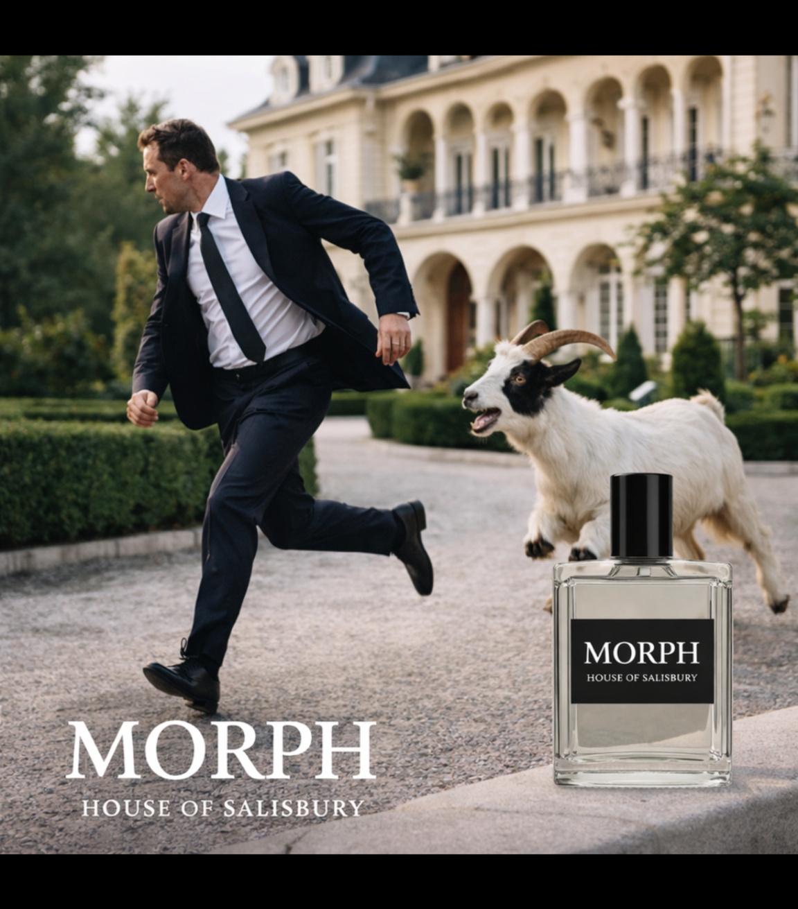
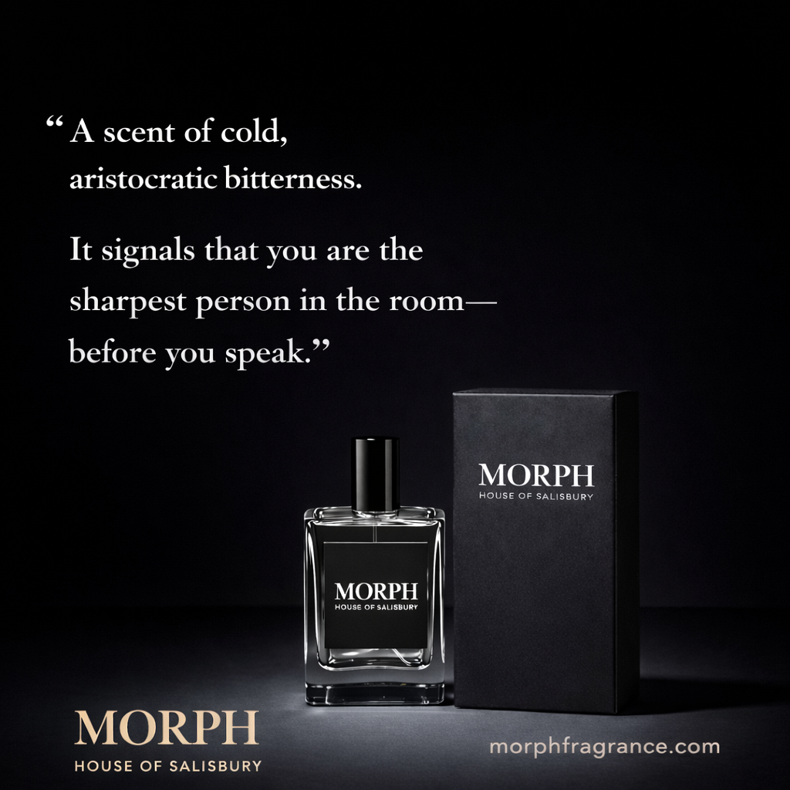
Historical / Context Overview
MORPH is a United States–based independent fragrance project presented under HOUSE OF SALISBURY. Within the archive, MORPH is documented for its deliberate use of tension, restraint, and object-forward hierarchy — placing the bottle as an emblem rather than a lifestyle accessory.
For Parfum Campaigns, MORPH is included as a contemporary reference point: a modern house attempting to recover structural discipline in an era dominated by trend mimicry and short-lived visual language.
Campaign & Visual Language
MORPH campaign work, as represented here, tends to operate on three structural principles:
- Tension as signal: scenarios and compositions engineered to create unease, contrast, and memorability.
- Object-first hierarchy: the bottle treated as the seal of the frame, not a prop competing for attention.
- Controlled typography: large, legible marks used as an authority layer rather than copy-heavy persuasion.
The visual system prioritizes readability and recall: the viewer understands the object immediately, then feels the framing. The result is less “storytelling” and more posture — a claim of identity made through structure.
Signature Eras / Campaign References
- Studio object authority: bottle and packaging presented as formal artifacts, with minimal distraction.
- Surreal disruption executions: luxury settings interrupted by threat or absurdity to produce tension and memory.
- Typography-led identity: strong wordmark scale functioning as a structural anchor for the frame.
Bottle / Iconography Notes
The bottle treatment is intentionally legible: rectangular geometry, high-contrast label system, and a restrained presentation that reads clearly at distance. Packaging is used as reinforcement — not ornament — extending the object’s authority rather than competing with it.
Archival Notes
- Images are archived as campaign artifacts and typography/structure references.
- Credits are recorded only when verified.
- Representative executions are prioritized over exhaustive duplication.
Closing
MORPH is archived in Parfum Campaigns as a contemporary attempt at permanence: a house using controlled hierarchy, tension, and object discipline to produce recall without relying on trend language.
GUESS (Los Angeles, 1981)
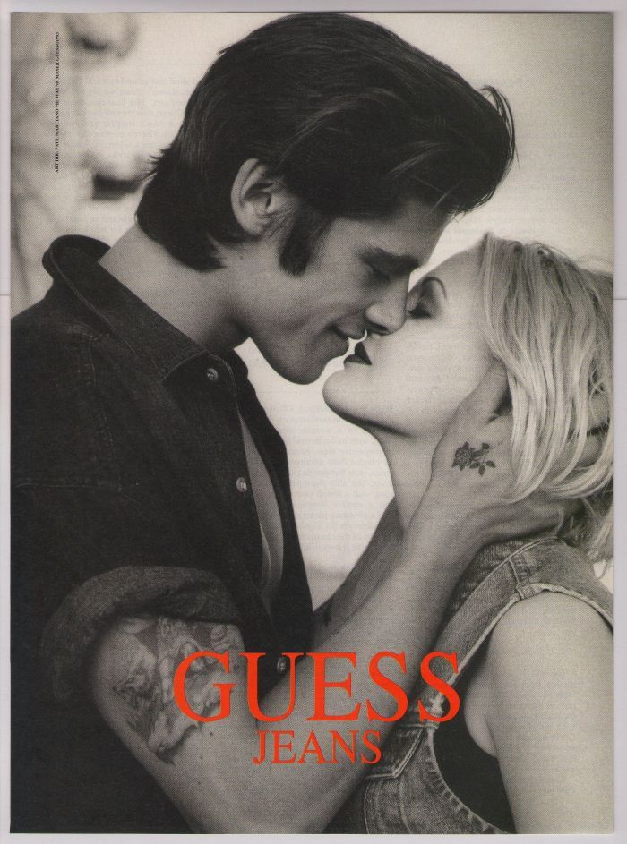
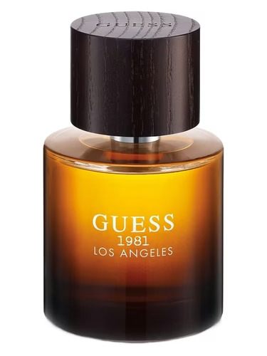
Historical / Context Overview
GUESS is a Los Angeles fashion brand founded in 1981 that became culturally associated with denim advertising as a form of provocation: black-and-white photography, erotic charge, and a deliberate blur between fashion and seduction.
For Parfum Campaigns, GUESS is included because its strongest work demonstrates a different kind of discipline than luxury restraint: a consistent, repeatable sexualized visual system that reads immediately at print and billboard scale.
Campaign & Visual Language
GUESS campaign language typically operates on three structural principles:
- Erotic proximity: intimacy staged as the primary attention mechanism, often with minimal narrative context.
- Denim as identity: the product functions as a uniform and a signal, supported by consistent styling codes.
- High-contrast legibility: monochrome framing and simplified backgrounds engineered for billboard readability.
The system is “raunchy” by design, but it is not random. The visual posture is consistent: youth, heat, closeness, and a certain Los Angeles performance of sexuality.
Signature Eras / Campaign References
- 1980s–1990s denim billboard dominance: black-and-white photography built for repetition and recall.
- Logo-as-stamp hierarchy: the GUESS wordmark used as a bold seal rather than a decorative layer.
- Fragrance extensions: bottle systems that borrow the founding myth language (city/year) to anchor product lines.
Bottle / Iconography Notes
GUESS fragrance iconography often leans on heritage tagging — city and founding year — to convert a fashion brand into an “origin story.” Bottle forms are typically simple and legible, with typography used as the primary authority layer.
Archival Notes
- Images are archived as campaign artifacts and brand-language references.
- Credits are recorded only when verified.
- Representative executions are prioritized over exhaustive duplication.
Closing
GUESS is archived in Parfum Campaigns as a proof of repeatable provocation: a house that standardized erotic tension into a durable, billboard-scale visual system.
GIORGIO ARMANI (Milan, 1975)
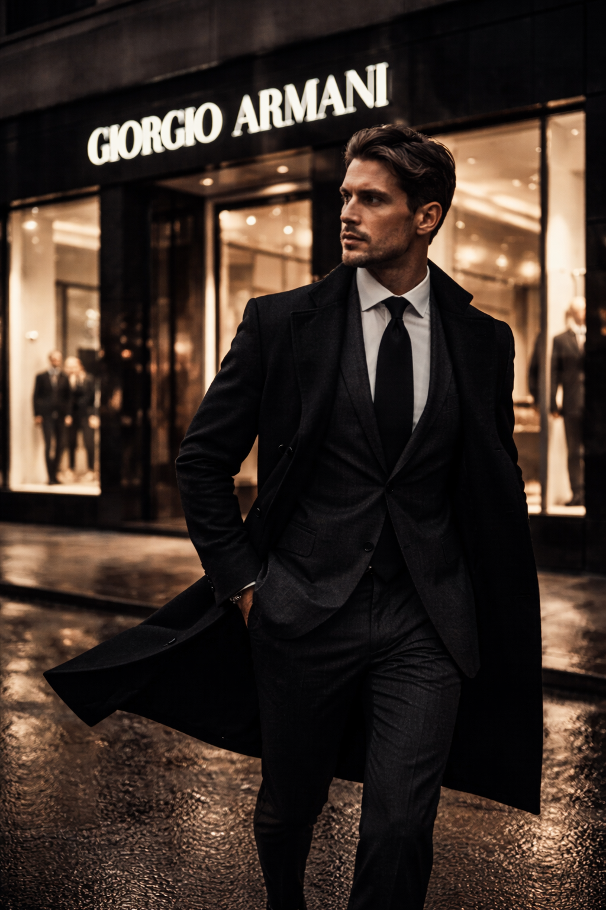
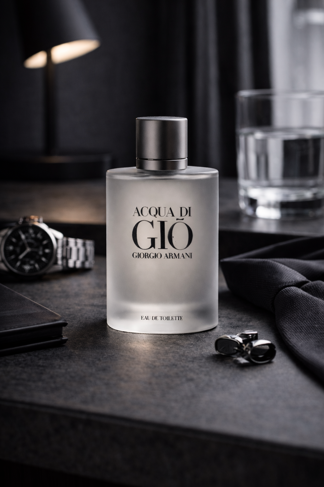
Historical / Context Overview
Giorgio Armani is an Italian fashion house founded in 1975 and associated with a particular form of modern luxury discipline: relaxed tailoring, controlled palette, and a refusal to overstate. In campaign history, Armani frequently communicates status through restraint — the opposite of spectacle.
For Parfum Campaigns, Giorgio Armani is included because its advertising language often operates like architecture: clean surfaces, precise posture, and an insistence that the house name itself is the authority layer.
Campaign & Visual Language
Armani’s strongest campaign work tends to operate on three structural principles:
- Tailoring as structure: clothing used as posture and identity architecture, not decoration.
- Neutral authority palette: controlled color temperature and minimal graphic noise to sustain permanence.
- Object as seal: fragrance bottles presented as quiet tokens of the house rather than staged lifestyle props.
When the system works, the frame reads as composed and inevitable. The campaigns do not attempt to entertain. They establish control, then let the viewer project aspiration into the silence.
Signature Eras / Campaign References
- Tailoring-era menswear authority: cinematic street scenes and clean storefront/architecture cues reinforcing house dominance.
- Acqua di Giò object discipline: bottle imagery built around understatement, clarity, and mass legibility without clutter.
- Modern luxury retail language: brand name used as a physical stamp — signage, glass, and controlled interiors.
Bottle / Iconography Notes
Armani fragrance iconography typically emphasizes clarity and repeatable form: clean bottle geometry, restrained typography, and a presentation that reads instantly at distance. The object is not dramatized; it is positioned as stable, adult, and permanent.
Archival Notes
- Images are archived as campaign artifacts and object/typography references.
- Credits are recorded only when verified.
- Representative executions are prioritized over exhaustive duplication.
Closing
Giorgio Armani is archived in Parfum Campaigns as a reference for restraint-as-authority: a house that repeatedly communicates luxury through control, letting posture and structure do the work instead of narrative excess.
TOM FORD (New York, 2005)
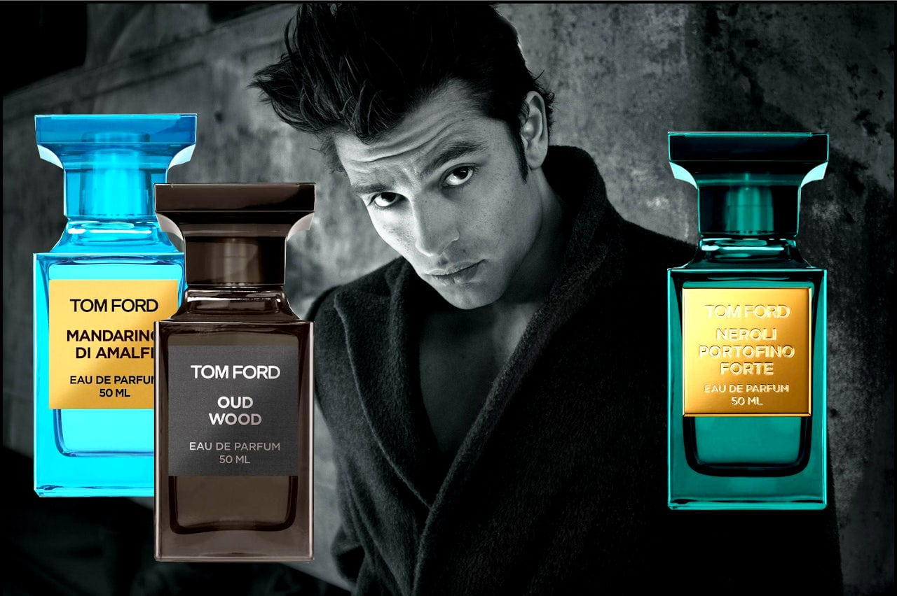

Historical / Context Overview
Tom Ford is a modern luxury house whose fragrance advertising operates as a disciplined system of surface, posture, and controlled provocation. The work repeatedly treats fragrance as an authority object rather than a lifestyle accessory, using clean hierarchy and tactile implication to make the bottle read as inevitable.
For Parfum Campaigns, Tom Ford is included because the house standardized a contemporary visual language that scales: the bottle as catalog unit, the label as stamp, and sensuality communicated through composition rather than narrative.
Campaign & Visual Language
Tom Ford’s strongest campaign language tends to operate on three structural principles:
- Object-first hierarchy: the bottle carries the claim; the scene exists to support it.
- Erotic minimalism: sensuality implied through light, texture, and proximity rather than plot.
- System identity: repeated bottle geometry and label discipline create a catalog that reads instantly.
The result is a visual posture that is modern and controlled: the work presents luxury as a sealed object system, not an aspirational storyline.
Signature Eras / Campaign References
- Private Blend indexing: color taxonomy, apothecary geometry, label-as-stamp discipline.
- Black Orchid iconography: ribbed bottle language and gold plaque signaling weight and glamour.
- Studio dominance: clean, high-contrast object staging built for repetition across formats.
Bottle / Iconography Notes
Private Blend bottles function like catalog trophies: squared shoulders, heavy glass, color as taxonomy, and a consistent label architecture. Black Orchid operates as an icon object: ribbed surface, metallic plaque, and controlled liquid spectacle used to communicate density and permanence.
Archival Notes
- Images are archived as campaign artifacts and object/typography references.
- Credits are recorded only when verified.
- Representative executions are prioritized over exhaustive duplication.
Closing
Tom Ford is archived in Parfum Campaigns as a modern proof of bottle-as-authority advertising: a house that uses hierarchy, surface, and system discipline to manufacture permanence at scale.
DIOR (Paris, 1946)
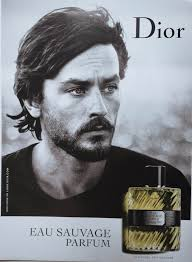
Historical / Context Overview
Dior is a Paris fashion house founded in 1946 whose fragrance advertising repeatedly demonstrates a high-level institutional ability: to move between eras without abandoning authority. In campaign history, Dior can operate in classic print discipline, cinematic myth-making, and modern celebrity execution while keeping the house name as the central stabilizer.
For Parfum Campaigns, Dior is included because it provides a long-running reference for how a legacy luxury house maintains control across changing media formats — print, outdoor, and film — without collapsing into trend language.
Campaign & Visual Language
Dior’s strongest campaign work tends to operate on three structural principles:
- House authority first: DIOR functions as a stamp; the campaign exists to reinforce the stamp.
- Myth via restraint: environments and composition do the persuasion work; copy stays minimal.
- Object legitimacy: the bottle is treated as a formal artifact, not a lifestyle prop.
When Dior campaigns succeed, they read as controlled: the frame establishes hierarchy immediately, then allows the viewer to project identity into the structure.
Signature Eras / Campaign References
- Classic print discipline: bottle clarity, restrained typography, French luxury legibility.
- Film-scale myth executions: landscape, silence, and controlled narrative minimalism.
- Modern men’s franchise systems: consistent bottle silhouette and brand mark stability across iterations.
Bottle / Iconography Notes
Dior’s bottle systems tend to emphasize clean geometry, repeatable label hierarchy, and immediate recognition at distance. Even when presentation becomes cinematic, the object is kept legible as an institutional token rather than a decorative element.
Archival Notes
- Images are archived as campaign artifacts and object/typography references.
- Credits are recorded only when verified.
- Representative executions are prioritized over exhaustive duplication.
Closing
Dior is archived in Parfum Campaigns as a legacy reference for sustained authority: a house capable of scaling myth while keeping hierarchy, object legitimacy, and brand stamp discipline intact.
YSL (Paris, 1961)
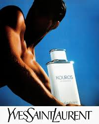
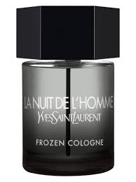
Historical / Context Overview
Yves Saint Laurent is a Paris house founded in 1961 whose fragrance advertising has repeatedly moved between two durable modes: (1) classicism as institutional authority and (2) modern nocturnal minimalism. Across eras, the strongest YSL work treats fragrance as a sign system — an emblem, a posture, a seal — rather than a lifestyle vignette.
For Parfum Campaigns, YSL is included because the house demonstrates how iconography can shift without collapsing: the imagery changes, but hierarchy and authority remain legible.
Campaign & Visual Language
YSL’s most effective campaign language tends to operate on three structural principles:
- Iconography first: bottle and name hierarchy remain dominant; secondary story elements never outrank the seal.
- Controlled drama: contrast and shadow are used as structure, not decoration — the frame stays disciplined.
- Posture over plot: campaigns imply identity through stance, light, and composition rather than narrative explanation.
When YSL campaigns succeed, they do not attempt to persuade with detail. They establish a controlled myth and let the emblem do the work.
Signature Eras / Campaign References
- Kouros-era classicism: sculpture references and monumental masculinity used to create permanence.
- Modern nocturnal franchise language: dark palettes, low-key lighting, and minimal typographic noise.
- Object discipline across formats: bottle legibility engineered to scale from print to outdoor.
Bottle / Iconography Notes
YSL bottle systems often communicate through geometry and shadow: faceted caps, strict silhouettes, and a recurring emphasis on legibility at distance. The strongest executions treat the bottle as an authority token — not an accessory — supported by restrained typography and controlled lighting.
Archival Notes
- Images are archived as campaign artifacts and object/typography references.
- Credits are recorded only when verified.
- Representative executions are prioritized over exhaustive duplication.
Closing
YSL is archived in Parfum Campaigns as a reference for icon continuity: a house that can move from monumental classicism to modern night minimalism while keeping the stamp, hierarchy, and object legitimacy intact.
HERMÈS (Paris, 1837)
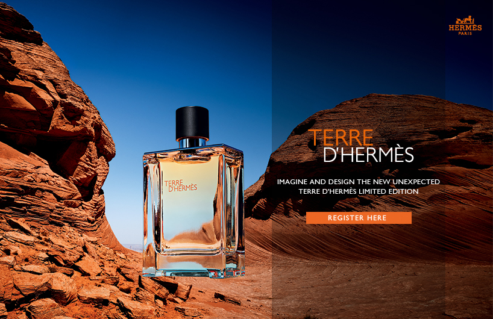
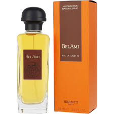
Historical / Context Overview
Hermès is a Paris house founded in 1837 whose brand language is rooted in leatherwork, equestrian heritage, and an uncompromising commitment to craft. In fragrance advertising, Hermès consistently treats scent as an extension of material discipline rather than lifestyle fantasy.
For Parfum Campaigns, Hermès is included because its strongest fragrance work communicates authority through restraint: texture, proportion, and typography functioning as institutional signals rather than promotional devices.
Campaign & Visual Language
Hermès fragrance campaigns typically operate on three structural principles:
- Material primacy: glass, surface, and light treated as narrative elements.
- Heritage posture: masculinity framed through lineage and craft rather than performance.
- Typographic restraint: minimal copy, precise placement, and refusal of spectacle.
Signature Eras / Campaign References
- Terre d’Hermès mineral framing: elemental imagery reinforcing grounded masculinity.
- Bel Ami heritage masculinity: equestrian codes translated into fragrance posture.
Bottle / Iconography Notes
Hermès fragrance bottles emphasize weight, clarity, and proportion. The object is treated as a crafted artifact rather than a decorative accessory, reinforcing the house’s institutional posture.
Archival Notes
- Images are archived as campaign artifacts and material-language references.
- Credits are recorded only when verified.
- Representative executions are prioritized over exhaustive duplication.
Closing
Hermès is archived in Parfum Campaigns as material authority: fragrance presented as an extension of craft, permanence, and institutional discipline.